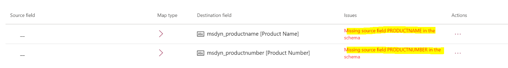

Probleme bezüglich Aktualisierungen von Finance and Operations Apps beheben
[!include[banner](../../includes/banner.md)][!include[rename-banner](~/includes/cc-data-platform-banner.md)]Dieses Thema enthält Problembehandlungsinformationen zur dualen Schreibintegration zwischen den Apps Finance and Operations und Dataverse. Dieses Thema enthält speziell Informationen zur Fehlerbehebung, mit denen Sie Probleme beheben können, die mit dem Upgrade von Finance and Operations Apps zusammenhängen.
Important
Einige der in diesem Thema behandelten Probleme erfordern möglicherweise entweder die Systemadministratorrolle oder Microsoft Azure Active Directory (Azure AD) Anmeldeinformationen des Mandantenadministrators. Im Abschnitt zu jedem Problem wird erläutert, ob eine bestimmte Rolle oder Anmeldeinformationen erforderlich sind.
Datenbanksynchronisierungsfehler
Erforderliche Rolle zum Beheben der Fehler: System Administrator
Möglicherweise erhalten Sie eine Fehlermeldung, die dem folgenden Beispiel ähnelt, wenn Sie versuchen, die DualWriteProjectConfiguration Entität zu verwenden, um eine Finance and Operations App auf Plattform Update 30 zu aktualisieren.
Infolog diagnostic message: 'Cannot select a row in Dual write project sync (DualWriteProjectConfiguration). The SQL database has issued an error.' on category 'Error'. 10/28/2019 15:18:20: Infolog diagnostic message: 'Object Server Database Synchronizer: ' on category 'Error'. 10/28/2019 15:18:20: Infolog diagnostic message: '[Microsoft][ODBC Driver 17 for SQL Server][SQL Server]Invalid column name 'ISDELETE'.' on category 'Error'. 10/28/2019 15:18:20: Infolog diagnostic message: 'SELECT T1.PROJECTNAME,T1.EXTERNALENTITYNAME,T1.INTERNALENTITYNAME,T1.EXTERNALENVIRONMENTURL,T1.STATUS,T1.ENABLEBATCHLOOKUP,T1.PARTITIONMAP,T1.QUERYFILTEREXPRESSION,T1.INTEGRATIONKEY,T1.ISDELETE,T1.ISDEBUGMODE,T1.RECVERSION,T1.PARTITION,T1.RECID FROM DUALWRITEPROJECTCONFIGURATION T1 WHERE (PARTITION=5637144576)' on category 'Error'. 10/28/2019 15:18:20: Infolog diagnostic message: 'session 1043 (Admin)' on category 'Error'. 10/28/2019 15:18:20: Infolog diagnostic message: 'Stack trace: Call to TTSCOMMIT without first calling TTSBEGIN.' on category 'Error'.
10/28/2019 15:18:20: Application configuration sync failed.
Microsoft.Dynamics.AX.Framework.Database.TableSyncException: Custom action threw exception(s), please investigate before synchronizing again: 'InfoException:Stack trace: Call to TTSCOMMIT without first calling TTSBEGIN."
Führen Sie folgende Schritte aus, um das Problem zu beheben.
- Melden Sie sich bei der virtuellen Maschine (VM) für die Finance and Operations App an.
- Öffnen von Visual Studio als Administrator und öffnen Sie den Application Object Tree (AOT).
- Suchen nach DualWriteProjectConfiguration.
- Klicken Sie im AOT mit der rechten Maustaste auf DualWriteProjectConfiguration und wählen Sie Zu neuem Projekt hinzufügen. Wählen Sie OK, um das neue Projekt zu erstellen, das Standardoptionen verwendet.
- Klicken Sie im Projektmappen-Explorer mit der rechten Maustaste auf Projekteigenschaften und setzen Sie Datenbank beim Erstellen synchronisieren auf Wahr fest.
- Erstellen Sie das Projekt und bestätigen Sie, dass der Build erfolgreich ist.
- Auf dem Dynamics 365 Menü wählen Sie Datenbank synchronisieren.
- Wählen Sie Synchronisieren, um eine vollständige Datenbanksynchronisation durchzuführen.
- Nachdem die vollständige Datenbanksynchronisierung erfolgreich war, führen Sie den Schritt zur Datenbanksynchronisierung erneut aus in Microsoft Dynamics Lifecycle Services (LCS) und verwenden Sie gegebenenfalls die manuellen Upgrade-Skripte, damit Sie mit dem Update fortfahren können.
Fehlende Entitätsfelder treten auf Zuordnungen auf
Erforderliche Rolle zum Beheben der Fehler: System Administrator
Auf der Seite Duales Schreiben wird möglicherweise eine Fehlermeldung angezeigt, die dem folgenden Beispiel ähnelt:
Fehlendes Quellfeld <field name> im Schema.

Führen Sie die folgenden Schritte aus, um das Problem zu beheben und sicherzustellen, dass sich die Felder in der Entität befinden.
- Melden Sie sich bei der virtuellen Maschine (VM) an für die Finance and Operations App.
- Wechseln Sie zu Arbeitsbereiche > Datenverwaltung, wählen Sie die Kachel Framework-Parameter aus und wählen Sie dann auf der Registerkarte Tabelleneinstellungen die Option Entitätsliste aktualisieren aus, um die Tabellen zu aktualisieren.
- Wechseln Sie zu Arbeitsbereiche > Datenmanagement, wählen Sie die Registerkarte Datentabellen aus und stellen Sie sicher, dass die Entität aufgelistet ist. Wenn die Entität nicht aufgeführt ist, melden Sie sich bei der VM für die Finance and Operations App an und stellen Sie sicher, dass die Entität verfügbar ist.
- Öffnen Sie die Seite Tabellenzuordnung über die Seite Duales Schreiben in der Finance and Operations-App.
- Wählen Sie Entitätsliste aktualisieren aus, um die Felder in den Tabellenzuordnungen automatisch auszufüllen.
Wenn das Problem immer noch nicht behoben ist, führen Sie die folgenden Schritte aus.
Important
Diese Schritte führen Sie durch den Vorgang des Löschens und anschließenden Hinzufügens einer Entität. Befolgen Sie die Schritte genau, um Probleme zu vermeiden.
- Gehen Sie in der Finance and Operations-App zu Arbeitsbereiche > Datenmanagement und wählen Sie die Kachel Datentabellen aus.
- Suchen Sie die Entität, der das Attribut fehlt. Klicken Sie in der Symbolleiste auf Zielzuordnung ändern.
- Klicken Sie im Bereich Abbildung auf Ziel auf Zuordnung generieren.
- Öffnen Sie die Seite Tabellenzuordnung über die Seite Duales Schreiben in der Finance and Operations-App.
- Wenn das Attribut nicht automatisch in die Zuordnung eingefügt wird, fügen Sie es manuell hinzu, indem Sie auf Attribut hinzufügen und dann auf Speichern klicken.
- Wählen Sie die Zuordnung aus, und klicken Sie auf Ausführen.